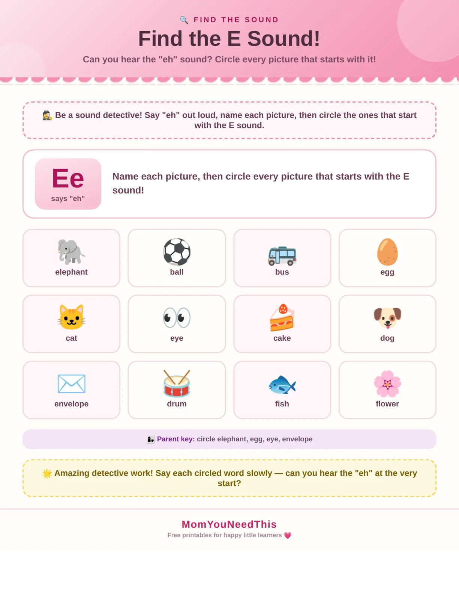

Find Letter E Sound Hunt For Pictures That Begin With The E Sound
Turn phonics into a treasure hunt! Your little detective will search the page for every picture that begins with the E sound.
🐘 Elephant
🥚 Egg
👁️ Eye
Quick Answer
This free printable turns phonics into a treasure hunt for the short E sound — /e/, the sound in elephant, egg and elbow. Preschoolers scan a page of pictures, say each name out loud, and circle only the ones that begin with that sound. It builds phonemic awareness — a key early reading skill — and is designed for ages 3-5. Download and print at home with no signup needed.

🔎 Search & Circle
Scan the page together and say each picture’s name slowly. Every time you hear the short E sound at the beginning — a quick, relaxed “eh” — circle that picture! Stretch the first sound out: e-e-egg. If the word does not start with “eh”, it is a trickster — leave it uncircled.
⬇️ Download Free Printable 🖨️ Print🎁 Free printable for toddlers & preschoolers
🕵️ Be A Sound Detective
Put on your detective voices and hunt slowly. The case to crack: which pictures begin with the short e sound? Words like elephant, egg and eye are your clues — elephant and egg start with “eh”, and eye shows off e's long sound, its own name. When you are not sure, say the word slowly and listen to the very first sound.
🏆 Count Your Finds
Count how many E-sound pictures you found together — e is the busiest letter in English, so detectives usually rack up a good score. Counting the finds sneaks in a little math practice too.
🎨 Keep Exploring Free Letter Activities
More alphabet learning activities are added regularly for toddlers and preschoolers.
🎁 View All Free Resources🔊 Know The E Sound Before You Hunt
You are hunting the short e sound: /e/, a quick, relaxed “eh” made with the mouth barely open. It is the sound at the start of elephant, egg and elbow — and also engine, envelope and every.
Short e never shouts, so this hunt is a listening game. Say each name slowly and lean in: the pictures whose names open with a soft, quiet “eh” are your finds. Pops, blows and hums at the start mean a trickster — cross it off the suspect list and move on.
One secret for grown-ups: e has a second sound — its long sound, which is its name, heard in eye, eagle and emu. This page hunts the short sound, the one children meet first and most often, since e is the most common letter in English.
🖨️ How to Use This Printable
Get started in minutes — everything here is free and made for busy parents.
- Download the printable. Tap the download button to save the free Free Find Letter E Sound file to your device.
- Print it out. Use any home printer and regular paper — cardstock works great for pages little hands will use again and again. The print button opens the full-size page in a new tab if you prefer to print from there.
- Learn together. Sit with your child and say every picture's name out loud — hearing the first sound is the whole game. When a word starts with the short “eh” of egg, it is a find. Short sessions work best.
- Explore more. Check the free printables linked below for your next activity.
❓ Free Find Letter E Sound FAQs
Is this Free Find Letter E Sound printable free?
Yes — every printable on MomYouNeedThis is 100% free to download and print. No signup, no payment, just tap the download button and print a fresh copy of the E hunt whenever your detective wants another case.
How do I use this alphabet printable?
Print the page and hunt together: say each picture's name slowly, stretch its first sound, and circle the picture only if it begins with the short e sound — /e/, like egg. Short, playful sessions work better than long lessons for little learners.
What literacy skills does this practice?
Beginning sounds, listening discrimination, and print awareness. This hunt trains one distinction in particular: hearing the short /e/ of egg — a quiet sound that hides between louder ones — and separating it from every other starting sound on the page. These listening skills sit underneath all later phonics and reading.
🔗 More Free Printables You’ll Love
Pair this printable with more free learning activities from the MomYouNeedThis library.
- 🔊 Free Lowercase Letter E Sound PracticeFree printable lowercase letter e sound practice for little learners.
- 🔊 Free Uppercase Letter E Sound PracticeFree printable uppercase letter e sound practice for little learners.
- 🔎 Free Find Letter C SoundFree printable find letter c sound practice for little learners.
- 🔎 Free Find Letter D SoundFree printable find letter d sound practice for little learners.